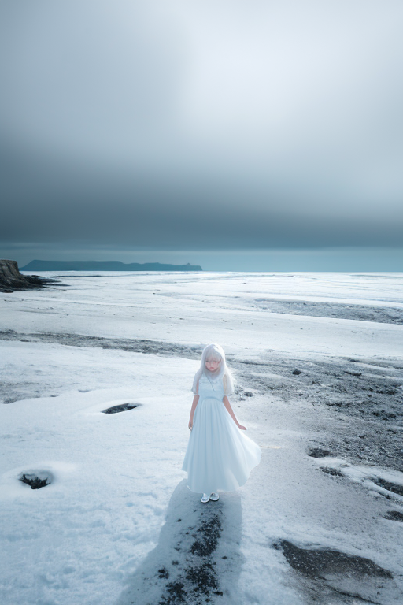
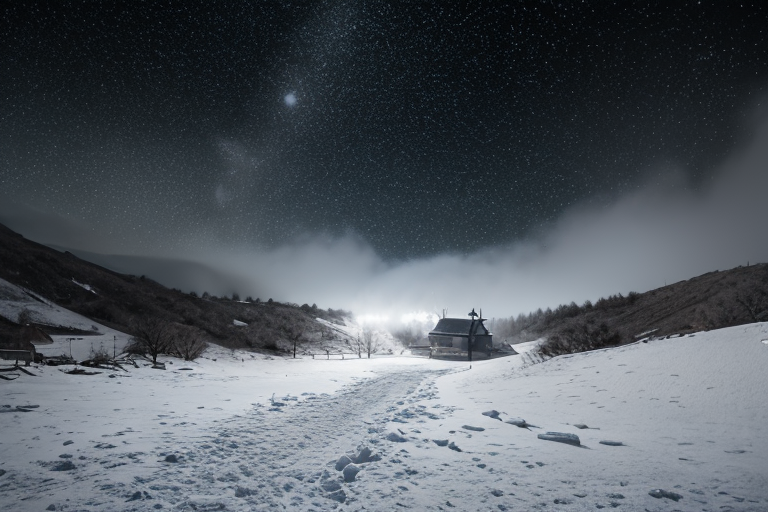
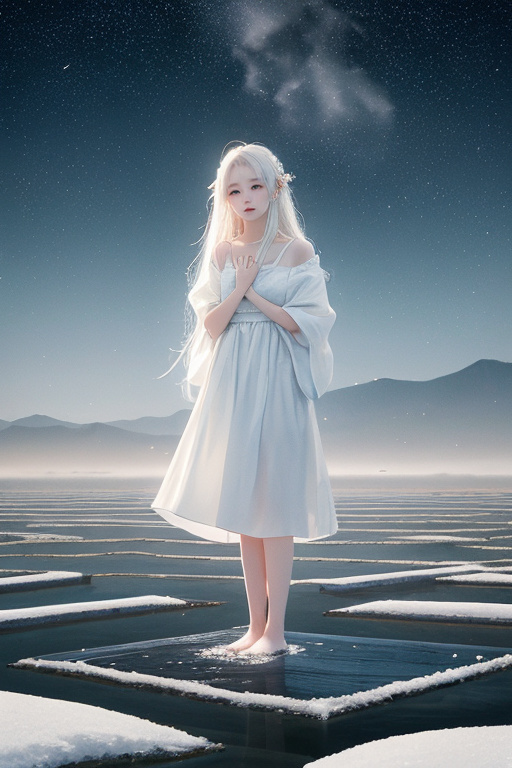
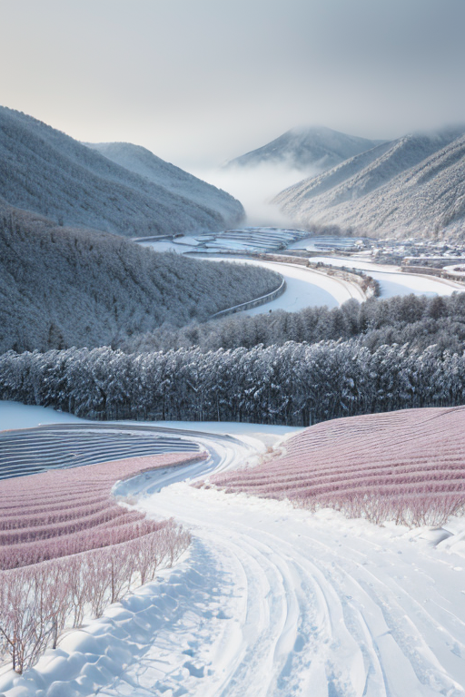

第一章 現実の新潟
あなたはまだ気づいていない。この土地にも、王がいることを。
日本海の灰色の波が、佐渡島の輪郭をぼかす冬の午後。境界の海は、内と外を分かつ巨大な余白だった。港町の波止場では、ロシア船籍の貨物船がゆっくりと横づけされ、異国の匂いを運んでくる。ここは、大陸からの気圧の谷が最初にぶつかる場所。冬の訪れは、鉛色の雲という形をとる。
王は、港の倉庫の影に立って、その雲を見つめていた。名をニイガリア・アルバ。この国を守る四十七人の王の一人。彼の王国「ニイガリア・アルバ」は、この海境に広がる。その役目は、大陸から押し寄せる気圧の過剰な力を、ほんの少し緩和すること。完全に防ぐことはできない。彼ができるのは、雪雲の密度を微調整し、吹雪の刃をわずかに鈍らせることだけだ。
彼の傍らには、主席妖精アルバナが、雪のように静かに佇んでいる。彼女は無言で、王の調整を支える。ここには、派手な奇跡はない。ただ、現実の厳しさを、ほんの少しだけ受け流す、沈黙の作業が続く。海風が冷たく頬を撫でる。王は思う。この巨大な余白である海と空の間に、いったい何を書き留めるべきなのか、と。

第二章「歪みの兆候」
佐渡島の西岸、尖閣湾の断崖に立つと、日本海の荒々しい青と、冬の空の鈍い白との境界が、くっきりと水平線を引いていた。ニイガリア・アルバは、その狭間を見つめていた。ここは、大陸からの気圧の谷が最初に接する、境界線の最前線だ。彼の感覚には、いつもとは異なる「歪み」が伝わってくる。遠くシベリアで生まれた寒気が、海を渡る間に蓄えた過剰な湿気。それは、予測を超える豪雪の予兆だった。
「調整を要します」
傍らのアルバナが、雪片のように軽い声で告げた。彼女の目には、気流の複雑な絡み合い、水蒸気の過剰な蓄積が映っている。王は微かに頷き、掌を上に向けた。指先から、目に見えない微細な「余白」が拡がり、迫り来る湿った大気の塊に、ほんの少しの隙間、逃げ道を作り始める。完全に逸らすことはできない。彼ができるのは、雪雲の密度を微調整し、吹雪の刃をわずかに鈍らせることだけだ。
彼は、この巨大な余白である海と空の間に、いったい何を書き留めるべきなのか、と考える。災害そのものを消す文字ではない。せめて、その筆致を、ほんの少しだけ優しいものに変えるための、余白の取り方なのだろうか。風が強まる。彼の作業は、まだ終わらない。

第三章 王の葛藤
佐渡金山の坑道は、かつて人々が地の歪みを掘り出した痕跡だった。ニイガリア・アルバはその暗闇に立ち、自らの存在意義を問う。彼の王国は余白であり、豪雪は過剰なものを覆い隠す白の帳。彼の役割は、歪みを完全に消すことではなく、その衝撃を「受け止める」ことにあると、星からは教えられた。
しかし、感情が芽生え始めていた。雪崩の予兆を感じ取り、村を守るために全力で雪塊を分散させた夜、避けられた悲劇の代償に、棚田の一部が雪に埋もれた。豊穣を司る妖精コシヒカリスが、かすかな嘆きのような光を放ったのを感じた。一方を守れば、他方にしわ寄せが及ぶ。この「選択」の重みが、彼の静観を蝕み始める。
余白に何を書くのか。災害の爪痕を最小限に留める「調整」の文字か。それとも、何かを守り、何かを諦めるという、苦渋に満ちた「選択」の記録か。彼は、自らが書くべきものは、後者かもしれないと思い始めていた。それは、王としての役割を、静かなる拒絶へと向かわせる危うい一歩でもあった。

第四章 妖精との対話
星峠の棚田の水面に、夕陽が沈んでいく。アルバナは、王の傍らに静かに立っていた。
「王よ、あなたは余白に、『選択』の記録を書こうとしていますね」
王は答えず、棚田の一枚一枚が黄昏に染まるのを見つめた。彼女は続けた。
「私たちは、境界を守る者です。海と陸の、内と外の。その狭間で、すべてを守ることはできません。だからこそ、余白が生まれる。その余白に、何を書くか」
彼女の声は、雪が積もるように柔らかかった。
「佐渡の海を渡る渡り鳥は、ここで羽を休め、また飛び立つ。越後湯沢の温泉は、地下深くの熱と、地上の冷気が交わって生まれる。出会いとは、常に別れの始まりでもある。守るとは、守れなかったものの記憶を、共に背負うことです」
王は、自らが感じ始めた「苦渋」という感情が、単なるノイズではなく、この土地そのものが紡いだ「選択」の歴史の反映なのだと、初めて理解した。上杉謙信の決断も、金山の輝きと闇も、すべてはこの狭間で生まれた選択の連続だった。
「では、余白に書くべきは」
「あなたが今、感じていることそのものです。守り、諦め、それでも尚、境界線に立ち続ける者の『忍耐』の記録を」
雪原のような余白は、ただの空白ではなかった。無数の出会いと別れが、層を成して積もった、静かな記憶の場だった。

第五章 微調整と余韻
星峠の棚田に、最初の雪が音もなく降り始めた。冬の訪れは、ここでは静かな宣言である。ニイガリア・アルバは、その余白に満ちた斜面を見つめていた。彼の役割は、豪雪という過剰な圧力を、田を潰さない程度に緩和し、春の雪解け水を、氾濫しないタイミングで少しずつ解放することだ。アルバナが雪の重みを分散させ、コシヒカリスが地中の水脈をそっと整える。すべては目立たない微調整の連続だった。
ある日、清津峡を訪れた一人の写真家が、トンネルから見える海のような青い光景に息を呑んだ。彼は、その絶景を撮るために、わざわざ吹雪の予報が出ている日に訪れたのだった。しかし、吹雪は彼がシャッターを切るほんの一時間、不思議と峠の向こうで足止めされていた。王の微調整は、時に人の「偶然」の一瞬を支える。
彼は答えを見つけた。余白に書くべきは、巨大な物語ではなく、この狭間で紡がれる、小さな出会いと持続の記録だ。雪に埋もれてもなお、次の春を信じて佇む棚田のように。境界線に立ち、内と外の両方を見つめながら、ただ、そこに在り続けること。その忍耐の軌跡そのものが、この国を形作る無数の層の一つとなる。
あなたの町にも、王がいる。